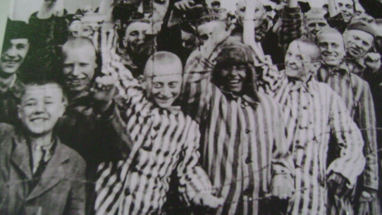
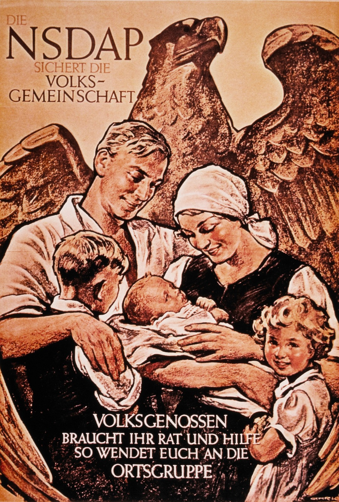
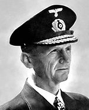

Nazismul, numit și Național-Socialismul, este o ideologie totalitară naționalistă, inspirată din fascism, care a funcționat în Al Treilea Reich între anii 1933 și 1945, în timpul dictaturii lui Adolf Hitler. Acesta era un regim politic de extremă dreapta caracterizat de antisemitism (ura împotriva evreilor), rasism, ultranaționalism, anticomunism.
| Stema |
|---|
| Steag |
| Deviaza |
"Ein Volk, ein Reich, ein Führer." |
| Crucea de Fier | Crucea celtica | Totenkopf |
Născut pe 20 aprilie 1889, în Braunau am Inn, Austro-Ungaria, Adolf Hitler a fost întemeietorul Nazismului. Acesta, împreună cu familia sa, s-a mutat în Germania, începând să capete accentul bavarez si să dezvolte idei naționaliste, disprețuind Imperiul Habsburgic din cauza amestecului etnic. În 1905 acesta se mută în Viena, ducând o viață de pictor urban. În 1907 și 1908 a aplicat la Akademie der Künste bildenden Wien (Academia de Arte Frumoase din Viena), însă a fost respins ambele dăți. Acolo a aflat de la mai mulți intelectuali despre concepțiile extremiste care i-au influențat ideile si gândirea, iar în 1914 a revenit în Munchen. Acesta s-a înrolat in armata Germaniei în Primul Razboi Mondial și a luptat în bătălii importante(Ypres, Somme, Arras, Passchendaelle), fiind decorat de mai multe ori. A fost decepționat de înfrângerea țării sale, însă credea în Dolchstoßlegende, teorie care îl ajutase să și accentueze ideologia. În 1922 acesta a înființat Partidul Nazist (Partidului Muncitoresc German Național-Socialist – NSDAP), provenit din fostul Partid Muncitoresc German. ,,Puciul de la berărie” a fost o lovitură de stat planificată de politicianul austriac, între 8-9 noiembrie 1923, inspirată de ,,Marșul asupra Romei” al lui Mussolini; a fost un eșec, iar pe 11 noiembrie Hitler a fost arestat. A stat 9 luni în închisoarea din Landsberg am Lech, Bavaria, unde a avut timp să scrie cartea ,,Mein Kampf”, publicată în 1925. În 1932 NSDAP câștigă alegerile pentru Reichstag, profitând de Marea Criză economică din perioada interbelică. În 1933 a fost numit cancelar, iar, conform Legii de împuternicire și a suprimării adversarilor politici, regimul politic al Germaniei se transformă in dictatură totalitară, iar Adolf Hitler devine Führer.
Ideologia nazistă a fost bazată pe concepții rasiste, prezentate de Hitler în lucrarea sa, ,,Mein Kampf”. Conform acesteia, rasele omenirii erau ierarhizate. Astfel, poporul german făcea parte din rasa Ariana/Nordică, care era considerată superioară altora. Pentru a menține puritatea rasei, poporul era dator să controleze celelalte rase ,,inferioare”: slavii, evreii, țiganii. Din același motiv erau eradicați oameni cu probleme de sănătate ereditare si boli mintale prin campania numita Aktion T4. Hitler își dorea crearea celui de-Al Treilea Reich care cuprindea toți germanii de peste frontierele Germaniei (Cehia, Austria, Estonia), dar și asigurarea Lebensraumului (motiv al invadării Poloniei). Din punct de vedere economic, naziștii se bazau pe producția proprie și pe interesele locale, iar companiile multinaționale erau evitate, piața nefiind liberă. Principalele obiective erau eliminarea șomajului, a inflației și ridicarea nivelului de trai al claselor sociale de mijloc și de jos. Hitler era creștin declarat, considerând ideologia sa una bazată pe creștinism, sale faptele sale contraziceau ideile creștine. El a fost botezat catolic, drept pentru care denatura în discursurile sale idei creștine, spre exemplu pentru a întări retorica antisemită. Nu a fost excomunicat de Biserică, însă unii preoți s-au opus nazismului și au fost trimiși în lagăre de concentrare
Antisemitismul era principala caracteristică a lui Hitler și a nazismului. Această idee existență ataca direct simpla lor existență. O tactică de propagare eficientă era Dolchstoßlegende. Naziștii considerau că armata Germaniei nu ar fi pierdut Primul Razboi Mondial dacă nu erau trădați de evrei si forțele politice așa-zis marxiste care au semnat Tratatul de la Versailles. Aceștia au fost numiți Novemberverbrecher. Totodată, se credea că exista o conspirație internațională a marilor bancheri, un grup format din evrei, care ar fi produs Marea Criza Economică din 1929. În 1935 au fost adoptate Legile de la Nürnberg, primele legi rasiale, scrise de Wilhelm Frick, care prevedeau că cetățenia germană poate fi deținută doar de persoanele de origine germană. Căsătoriile sau relațiile extraconjugale între germani si evrei au fost interzise. Aceștia erau diferențiați de ceilalți cetățeni prin însemnarea lor cu ,,Steaua lui David”. Pe 9 noiembrie 1938 au fost adoptate măsuri antisemite fizice iar, în aceeași noapte, au fost distruse case, magazine evreiești și sinagogi. Numeroși evrei au fost trimiși în lagăre de concentrare și numeroși altii au fost uciși. Această noapte a dat startul campaniei de exterminare a evreilor si a fost numita Kristallnacht. Planul Madagascar a fost o idee susținută chiar de Heinrich Himmler și Adolf Eichmann, care consta în deportarea evreilor pe Insula Madagascar, folosind navele Marinei Marii Britanii. Planul a căzut, deoarece nu s-a reușit învingerea britanicilor.În 1942 a avut loc Conferința de la Wannsee în care s-a decis ,,Solutia finală a problemei evreiești”, care presupunea exterminarea sistematică a evreilor din Europa și care a dus la Holocaust. Deși uciderea evreilor se practica și înainte , din acel moment fenomenul a luat amploare. Evreii de pe teritoriile germane erau trimiși în lagăre de concentrare înghesuiți în trenuri de marfă, în condiții inumane. Cei care supraviețuiau “trenurilor morții” ajungeau în lagăre înconjurate de ziduri cu mitraliere și sârmă ghimpată sub tensiune electrică. La intrare se afla o poartă de fier cu celebra deviază ,,Arbeit Macht Frei”. Acolo, cei care erau apți de muncă erau duși în camere de carantină, pe când ceilalți erau trimiși la ,,dușuri” (camerele de gazare). Cei mai nenorocoși erau selectați și trimiși în laboratoare, unde medicii naziști făceau experimente. Indiferent de vârstă sau sex, aceștia erau torturați, rezultând deformări, traume, dizabilități și decese oribile. Cele mai cunoscute lagăre erau Auschwitz, în sudul Poloniei, Dachau, în apropiere de Munchen, și Treblinka, estul Poloniei.
Propaganda este o practică generală a regimurilor totalitare, astfel că și naziștii foloseau această metodă prin care opinia poporului era influențată în scopurile dorite, prin intermediul mai multor mijloace. În aprilie 1930, Hitler l-a desemnat pe Joseph Goebbels ca șef al aparatului de propagandă pe tot teritoriul Germaniei. Radioul, cinematografia, presa erau cele mai utilizate metode de propagare a informațiilor. Presa era cenzurată și controlată,singurele idei prezentate fiind doar cele favorabile partidului. Copiii germani erau îndoctrinați de mici cu ideologia regimului, fiind ușor convinși de figurile de autoritate din jurul lor. Discursurile erau o metodă foarte eficientă de persuasiune, politicienii naziști având un spirit oratoric dezvoltat. Un moment remarcabil ce evidențiază efectul propagandei asupra poporului german este discursul lui Goebbels de la Sportpalast, în care acesta propune Războiul Total pentru a câștiga conflagrația și a motiva soldații să continue lupta, iar publicul îl aproba într-o maniera fanatică.
0.55-1.50
Carte antisemită -,,Ciuperca otrăvitoare “- 1938
Poster din 1938,Evreul Etern. Expoziție politică majoră în cladirea bibliotecii muzeului german din München. Din 8 noiembrie 1937. Deschis zilnic de la 10:00 la 21:00”
Poster din 1930
,,Partidul Nazist protejează poporul. Camarazii voștri au nevoie de sfatul și ajutorul vostru, așa că alăturați-vă organizației locale de partid”.
| Sturmabteilung a fost o organizație paramilitară, fondată în 1921 de către Adolf Hitler, care s-a folosit de ea pentru a ajunge la putere. În 1931, Ernst Röhm devine șeful SA, adunând peste 400000 de membri. Acesta dorea înlocuirea armatei cu o Armată a Poporului, devenind, astfel, o amenințare pentru Hitler și partidul nazist. Liderii naziști au creat, prin propagandă, o imagine nefavorabilă a SA-ului. Din această cauză, pe 30 iunie 1934 a avut loc Nopatea Cuțitelor Lungi în care au fost uciși 85 de adversari politici. SA-ul nu a fost desființat, ci a contribuit în continuare la crimele de război ale lui Hitler, însă nu au mai reprezentat de atunci o forță politică. | Wehrmachtul reprezenta forțele armate ale Germaniei naziste și recruta încă din 1935 peste 100000 de oameni anual, serviciul militar fiind obligatoriu. Era formată din das Heer, die Kriegsmarine si die Luftwaffe. Ministerul de razboi a fost inlocuit de OKW, sub comanda lui Wilhelm Keitel, care era împărțit în OKH, OKM și OKL. Generalii naziști au perfecționat renumita tactică militară ,,Blitzkrieg”, pusă în aplicare în timpul invadării Franței și în Operațiunea Barbarossa. Aceasta presupunea alegerea unui punct slab al apărării adverse care urma să fie bombardat de Forțele Aeriene și de artilerie, iar apoi penetrat de tancuri, susținute de infanterie. Sistemul de comunicații era bine dezvoltat, în timp ce inamicii sufereauo destabilizare a comunicării. Funcționa remarcabil în zone de câmpie , datorită libertății de mișcare a tancurilor. |
| Șeful Suprem – Mareșalul Wilhelm Keitel | Șeful Statului Major -Alfred Jodl | ||
| Șeful Suprem – Mareșalul Wilhelm Keitel | Șeful Statului Major -Alfred Jodl | ||
| Comandanti: Werner von Fritsch (1935-1938); Walther von Brauchitsch (1938-1941); Adolf Hitler (1941-1945) | ||
| 1936-1938 | 1938-1942 |
| OKM |
|---|
| Comandanți Erich Raeder (1928-1943) Karl Donitz (1943-1945) |
| OKL |
|---|
| Comandant |
| Hermann Göring |
Poliția secretă de stat a Germaniei a fost înființată de Hermann Göring în 1933 și era subordonată SS ului. Aceasta asigura ordinea pe străzile teritoriilor naziste prin teroarea emanată față de evrei, țigani, homosexuali, oameni de altă religie, comuniști, opozanți politici și alte minoritati.
Schutzstaffel, altă organizație paramilitară înființată în 1925 ca o subunitate a SA, funcționa ca o gardă de apărare pentru Führer și era condusă de Heinrich Himmler. Aceștia sunt principalii responsabili pentru crimele de război și teroarea instaurată în timpul dictaturii naziste. Ei conduceau lagărele de concentrare prin SS-Totenkopfverbände, luptau pe front cu forțele armate prin Waffen-SS și îndeplineau ordinele lui Hitler prin ramura Allgemeine-SS. Au activat atât pe Frontul de Est, cât și pe cel de Vest, dar și în Peninsula Balcanica, împotriva Greciei și Iugoslaviei.
| Joseph Goebbels | Heinrich Himmler | Hermann Göring | Rudolf Hess |
| Ministru al propagandei | Lider SS | Ministru OKL | Adjunctul Fuhrerului |
| Erich Raeder | Karl Donitz | Wilhelm Frick | Alfred Rosenberg |
|  | |
||
| Comandant OKM | Comandant OKM | Ministru de Interne; Protector al Boemiei-Moraviei | Membru NSDAP |
| Wilhelm Keitel | Alfred Jodl | Adolf Eichmann | Oskar Schindler |
|
|||
| Seful Suprem OKW | Seful Statului Major OKW | Ofiter superior al SA si SS; A organizat si condus ,,Soluția Finală”, împreună cu toate operațiunile care au constituit Holocaustul; de exemplu organizarea evreilor în lagărele de concentrare. În 1950 a fugit în Argentina, țara refugiaților naziști. În 1960, Mosadul, serviciul secret al Israelului, a reușit să îl captureze. A fost judecat la Ierusalim, fiind acuzat pentru crime de război și crime împotriva umanității. A fost condamnat la moarte și spânzurat în 1962, 31 mai, iar cenușa sa a fost aruncată în apele Mării Mediterane. | Industriaș, spion, membru NSDAP; Deținea fabrici de email și muniții în Polonia și Cehia. A reușit să salveze 1100 evrei de la Holocaust, oferindu-le locuri de muncă plătite în fabricile sale. |
După sfârșitul Razboiului Mondial, au avut loc mai multe procese, din 1945 până în 1949, în care criminalii de război național-socialiști au fost pedepsiți, fie cu moartea, fie cu închisoarea pe viață. Acestea s-au desfășurat în Palatul de Justiție din Nürnberg, iar principalele procese au fost ,,Procesul Principalilor Criminali de Razboi”, ,,Procesul medicilor” și ,,Procesul judecătorilor”. În Procesul principal au fost inculpați 24 de oameni politici: liderii Partidului Nazist, ai SS-ului, ai SA-ului, GESTAPO-ului și OKW-ului.
Neonazismul este o imitare a nazismului, în speranța de a-l reînvia. Această mișcare politică se bazează pe aceleași caracteristici, adăugându-se noi doctrine, precum islamofobia sau negarea Holocaustului. Există organizații răspândite în multe zone ale lumii, însă, în majoritatea statelor, există legi anti-naziste care previn expansiunea acestei ideologii.
- Soldații naziști au reușit să câștige numeroase bătălii datorită efortului fizic și al rezistenței acestora. Însă această putere a soldaților nu era naturală , ci sporită de un medicament administrat fiecărui soldat, Pervitin. Era un drog făcut pe bază de metamfetamină ; soldații îl luau pentru creșterea încrederii în sine, eliminarea senzațiilor de teamă, somnolență și oboseală. Acesta era recomandat de oficialii naziști, deoarece ajutau soldații să ofere un ramdament ridicat în bătăliile de pe front, chiar dacă avea efecte adverse devastatoare pentru corpul uman. A fost poreclit Stuka-Tabletten, Panzerschokolade sau Hermann-Göring-Pille și era folosit mai ales în timpul atacurilor de tip Blitzkrieg. - Arienii erau considerati superiori, drept urmare persoanele de rasă germana erau privilegiate și tratate bine. Programul Lebensborn era o organizație din cadrul SS care avea case de maternitate și oferea asistență financiară femeilor care aveau copii cu membrii SS.
https://ro.wikipedia.org/wiki/Mein_Kampf https://ro.wikipedia.org/wiki/Crahul_de_pe_Wall_Street_din_1929 https://ro.wikipedia.org/wiki/Spa%C8%9Biu_vital https://ro.wikipedia.org/wiki/Noaptea_de_cristal https://ro.wikipedia.org/wiki/Conferin%C8%9Ba_de_la_Wannsee https://ro.wikipedia.org/wiki/Adolf_Hitler https://ro.wikipedia.org/wik/Adolf_Eichmann https://ro.wikipedia.org/wiki/Heinrich_Himmler https://www.catchy.ro/aktion-t4-programul-nazist-care-a-trimis-la-moarte-300-000-de-oameni-cu-handicap/162560 https://adevarul.ro/locale/hunedoara/cele-mai-cumplite-lagare-exterminare-create-nazisti-locurile-murit-trei-milioane-oameni-1_5c87dd96445219c57e2adb22/index.html https://ro.wikipedia.org/wiki/Lag%C4%83rul_de_exterminare_Treblinka https://ro.wikipedia.org/wiki/Lag%C4%83rul_de_concentrare_Auschwitz https://ro.wikipedia.org/wiki/Holocaust https://ro.wikipedia.org/wiki/Lag%C4%83rul_de_concentrare_Dachau https://ro.wikipedia.org/wiki/Nazism https://ro.wikipedia.org/wiki/Mitul_cu%C8%9Bitului_%C3%AEnfipt_%C3%AEn_spate https://ro.wikipedia.org/wiki/Arderea_c%C4%83r%C8%9Bilor_%C3%AEn_Germania_(1933) https://en.wikipedia.org/wiki/Sportpalast_speech https://ro.wikipedia.org/wiki/Pervitin https://incredibilia.ro/pervitin-pastila-soldati-germani/ https://ro.wikipedia.org/wiki/Solu%C8%9Bia_final%C4%83 https://ro.wikipedia.org/wiki/Joseph_Goebbels https://ro.wikipedia.org/wiki/Suprema%C8%9Bie_alb%C4%83 https://www.britannica.com/video/180235/Joseph-Goebbels-war-crowd-Berlin-1943 https://ro.wikipedia.org/wiki/Antisemitism https://ro.wikipedia.org/wiki/Schutzstaffel https://ro.wikipedia.org/wiki/Germania_Nazist%C4%83 https://ro.wikipedia.org/wiki/Noaptea_cu%C8%9Bitelor_lungi https://ro.wikipedia.org/wiki/Sturmabteilung https://www.historia.ro/sectiune/general/articol/80-de-ani-de-la-noaptea-cutitelor-lungi https://ro.wikipedia.org/wiki/Wehrmacht https://ro.wikipedia.org/wiki/Kriegsmarine https://ro.wikipedia.org/wiki/Luftwaffe https://www.historia.ro/sectiune/actualitate/articol/cum-a-aparut-temuta-tactica-germana-blitzkrieg https://www.facinghistory.org/holocaust-and-human-behavior/chapter-6/visual-essay-impact-propaganda https://ro.wikipedia.org/wiki/Lebensborn https://ro.wikipedia.org/wiki/Neonazism https://ro.wikipedia.org/wiki/Propagand%C4%83_nazist%C4%83 https://ro.wikipedia.org/wiki/Simbolism_nazist https://en.wikipedia.org/wiki/Totenkopf https://ro.wikipedia.org/wiki/Procesele_de_la_N%C3%BCrnberg#Procesul_principal https://ro.wikipedia.org/wiki/Wilhelm_Keitel https://ro.wikipedia.org/wiki/Procesul_judec%C4%83torilor https://ro.wikipedia.org/wiki/Experimentele_naziste_asupra_fiin%C8%9Belor_umane https://ro.wikipedia.org/wiki/Hermann_G%C3%B6ring https://ro.wikipedia.org/wiki/Oskar_Schindler https://ro.wikipedia.org/wiki/Gestapo https://ro.wikipedia.org/wiki/Actul_de_%C3%AEmputernicire_din_1933 https://en.wikipedia.org/wiki/German_Army_(1935%E2%80%931945) https://ro.wikipedia.org/wiki/Blitzkrieg https://ro.wikipedia.org/wiki/Anschluss https://ro.wikipedia.org/wiki/Cl%C4%83direa_Reichstagului https://de.wikipedia.org/wiki/Novemberverbrecher